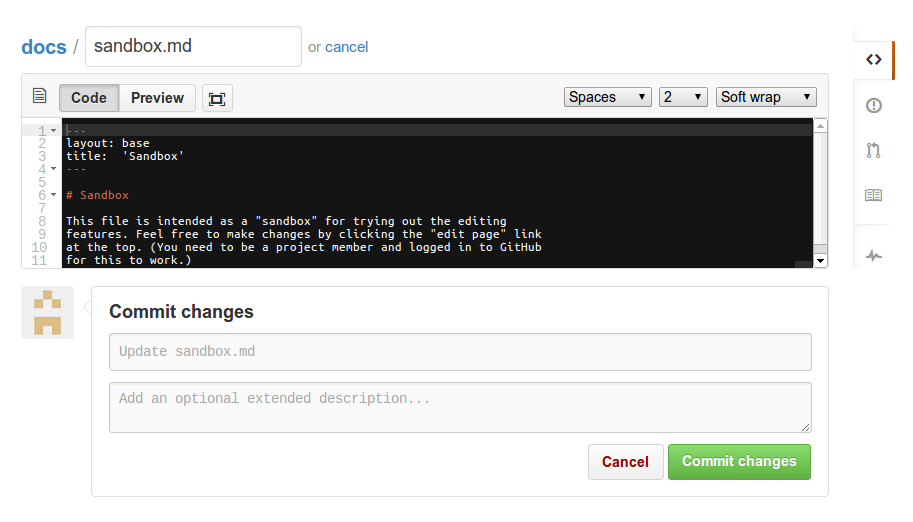

How to contribute
This page describes how to contribute to these online materials.
Contents:
Preliminaries
The online documentation is stored in GitHub, a service for projects using the Git version control system. To contribute, you need a GitHub account.
If you already have a GitHub account, just make sure you are logged in before moving on. If you do not, please go to https://github.com/join and create an account first. (it’s free, only takes a minute, and there’s a reasonable privacy policy in place.)
After logging in to GitHub, see the following:
Editing
(Note: the following instructions are for project members. If you are not a member, see here)
To get started with editing the materials, first read the brief file format description below. Then, the easiest way to edit the materials is to use the online editing features provided by GitHub. If you prefer to use your own text editor or need to make larger changes, you may wish to use the git version control system and work on the files on your own computer.
File format
The online documentation is generated from a simple format that largely resembles plain text. Similarly, the embedded visualizations are generated from representations in the Stanford Dependency or CoNLL-X formats, each of which can be created and edited manually or copied in from the output of relevant tools.
For example, the following:
A copula is the relation between the complement of a copular verb and the copular verb.
Bill is an honest man
cop(man, is)
The following are considered copular verbs:
- appear
- be
- become
- […]
is generated from this input:
A copula is the relation between the complement of a copular verb and the copular verb.
~~~ sdparse
Bill is an honest man
cop(man, is)
~~~
The following are considered copular verbs:
* appear
* be
* become
* [...]
The input is primarily in the
Markdown format, which
can be mostly written like plain text and mixed freely with inline
HTML. The only exception is the format used for embedding
visualizations, which is supported as an extension specific to this
project. To embed a visualization represented in the Stanford
Dependency format, simply wrap it in lines with ~~~ sdparse and
~~~, as in the example above. (Or, correspondingly, wrap in HTML
tags <div class="sd-parse"> and </div>)
For more detail, you can see the documentation for the Markdown syntax and embedded visualizations. However, we believe that the formats are simple enough to learn by example and by doing, and suggest to proceed directly to the next section (editing).
Editing online
GitHub provides basic online editing functionality. The interface looks something like this:

To get started, the only relevant parts are the large black edit area and the “Cancel” and “Commit changes” buttons at the bottom.
To give this a quick try, click on the following link: edit sandbox document. This opens a “sandbox” document in a new tab. After testing it out, feel free to either cancel without saving your changes, or save them into the version control system using the “Commit changes” button. You can see the resulting document here (reload to see changes, and please note it may take some time for the changes to show up.)
For experimenting with the system, we recommend using the sandbox document instead of the “real” documents.
To edit the actual documentation, first find the page you’re
interested in. For example, to navigate to the documentation for the
English language dobj (direct object) dependency:
- Start from the homepage (http://universaldependencies.github.io/docs/)
- Click on the “English relations index” link (go to http://universaldependencies.github.io/docs/en-index.html)
- Click on the “dobj” link (go to http://universaldependencies.github.io/docs/en/dobj.html)
Then, edit and save your changes:
- Click on the “edit page” link on the top
- Make your changes in the GitHub editor
- (Optional: add a message describing your changes in the “Commit changes” box)
- Click on “Commit changes”
Finally, wait a moment for your revisions to the documentation to be compiled (normally no more than 10 seconds) and reload the documentation page to make sure they look right.
That’s all you need to get started. If you have any issues using the system, please see the troubleshooting section below.
Using Git
As an alternative to using the online editing features, you can also edit the materials using the Git version control system as described in this section.
If you are not previously familiar with Git, please see GitHub instructions on setup and basic use. The rest of this section assumes that you have git set up and are working on a terminal in a unix-like environment. For other use cases, please see GitHub documentation.
The project materials are found in the repository https://github.com/universaldependencies/docs. To check out these materials from GitHub, run the following command:
git clone git@github.com:UniversalDependencies/docs.git
If successful, this will create the subdirectory docs/ containing
the data of the repository in your current directory. You can then
edit the files in the repository normally, using your favorite text
editor. After completing a set of changes, you can commit the changes
with the command
git commit -a
and push them to the shared online repository with
git push
if you see the error error: failed to push some refs, it’s likely
that others pushed changes to the shared online repository while you
were working. You can retrieve these changes and merge them with
yours with the command
git pull
This covers the very basics only. Please see the extensive materials available online at GitHub and elsewhere for details.
Technical note: please do not commit anything into the gh-pages
branch of the repository. The files in this branch are autogenerated
and will be overwritten on any changes to the repository. (If this
note makes no sense to you, don’t worry – you cannot do this by
accident.)
Filing issues
To file bug reports, feature requests, suggestions for improvement, etc., you can use the project issue tracker: https://github.com/universaldependencies/docs/issues.
The issue tracker is open to members and non-members alike, and can be used to let (other) project members know of any issue with the online documentation, including technical problems, mistakes in the descriptions or examples, or suggestions for how to improve any aspect of the project.
Non-members
Although only members of this project can directly edit the online materials, you do not need to be a member to contribute. Non-members can either file issues on the project bug tracker, or submit proposed changes as pull requests.
Links
Troubleshooting
No trouble reported yet. If you have any, just ask Sampo (sampo.pyysalo@gmail.com) or Filip (fginter@cs.utu.fi)!